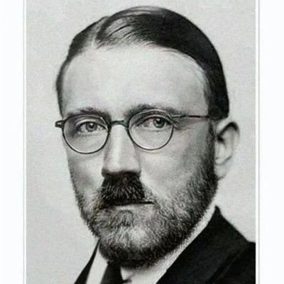

大狐帝国史官邹智萱（笔名段歌文）
@Rococo90933671
或许这也可以解释，为什么我那么希望自己变成一个可爱的女孩子，也毫无真正去变性的想法

lystodyne2
@lystodyne2
@Rococo90933671 或者性別認同就是一件本質上存在的事情，但只有當性別認同和指派性別不一致時人們才會察覺到。
你用一堆嚮往憧憬經歷去理解更為本質的事，是本末倒置的。
支持性別認同是更為本質的臨床證據有：
-當一方為跨，同卵雙胞胎同樣為跨的機率顯著高於異卵雙胞胎
-幾十年的扭轉治療確認無效
-神經影像學等